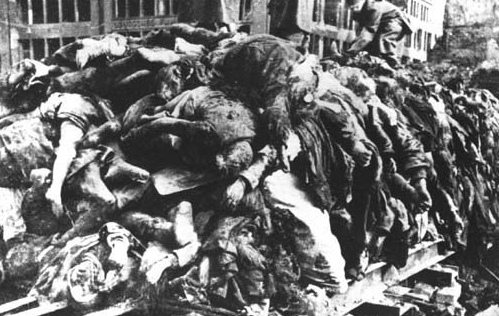

Death toll
The exact number of victims at Auschwitz is difficult to fix with certainty, because many prisoners were never registered and much evidence was destroyed by the SS in the
final days of the war. As early as 1942, Himmler visited the camp and ordered that "all mass graves were to be opened and the corpses burned. In addition the ashes
were to be disposed of in such a way that it would be impossible at some future time to calculate the number of corpses burned.
Shortly following the camp's liberation, the Soviet government stated that four million people had been killed on the site, a figure now regarded as greatly exaggerated.
While under interrogation, Höss said that Adolf Eichmann told him that two and a half million Jews had been killed in gas chambers and about half a million more had
died of other causes. Later he wrote, "I regard the figure of two and a half million as far too high. Even Auschwitz had limits to its destructive possibilities".
Gerald Reitlinger's 1953 book The Final Solution estimated the number killed to be 800,000 to 900,000, and Raul Hilberg's 1961 work The Destruction of the European
Jews estimated the number killed to be a maximum of 1,000,000 Jewish victims. French chemist and author Jean-Claude Pressac estimates that between 631,000 and 711,000
were killed at Auschwitz, of whom 470,000 to 550,000 were gassed.

In 1983, French scholar George Wellers was one of the first to use German data on deportations to estimate the number killed at Auschwitz, arriving at a figure of 1,471,595
deaths, including 1.35 million Jews and 86,675 Poles. A larger study started by Franciszek Piper used timetables of train arrivals combined with deportation records to
calculate at least 960,000 Jewish deaths and at least 1.1 million total deaths, a figure adopted as official by the Auschwitz-Birkenau State Museum in the 1990s.Piper
stated that a figure of as many as 1.5 million total deaths was possible.
By nation, the greatest number of Auschwitz's Jewish victims were from Hungary, accounting for 438,000 deaths, followed by Polish Jews (300,000 deaths), French (69,000),
Dutch (60,000), and Greek (55,000). Fewer than one percent of Soviet Jews murdered in the Holocaust were killed in Auschwitz, as German forces had already been driven
from Russia when the killing at Auschwitz reached its peak in 1944. Approximately 1 in 6 Jews killed in the Holocaust died at the camp.
The next largest group of victims were non-Jewish Poles, who accounted for 70,000 to 75,000 deaths. Twenty-one thousand Roma and Sinti were killed, along with 15,000
Soviet POWs and 10,000 to 15,000 peoples of other nations. Around 400 Jehovah's Witnesses were imprisoned at Auschwitz, at least 152 of whom died. An estimated
5,000 to 15,000 gay men prosecuted under German Penal Code Section 175 (proscribing sexual acts between men) were detained in concentration camps of which an unknown
number were sent to Auschwitz; of those sent to Auschwitz 80 percent died.